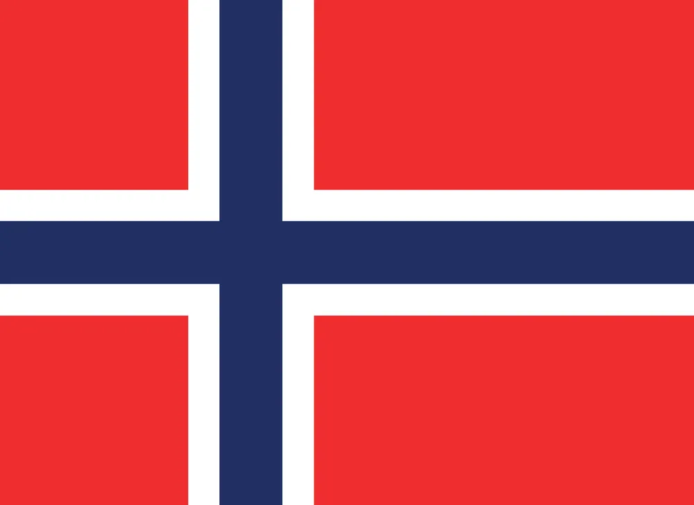
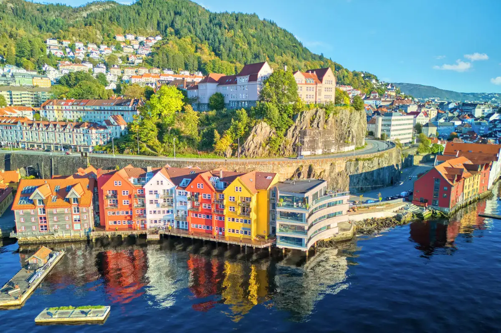
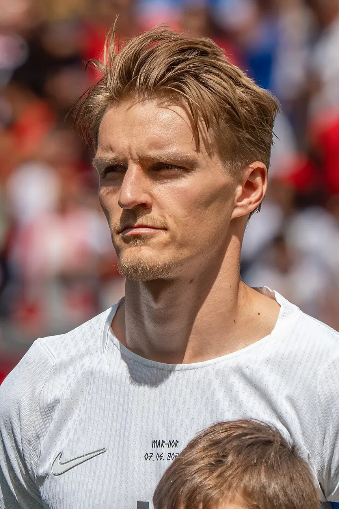
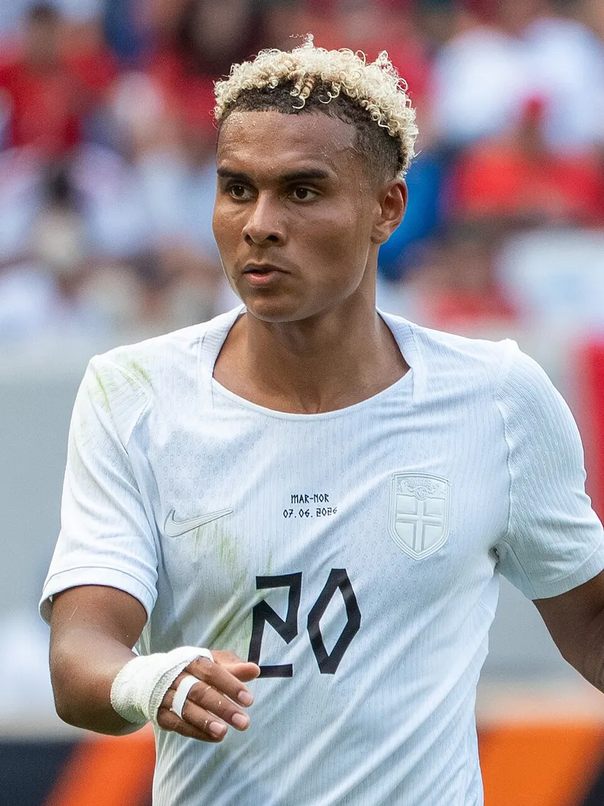

Noruega Volta à Copa Após 28 Anos!
Depois de quase três décadas fora, a Noruega retorna à Copa do Mundo com uma nova geração de jogadores talentosos. Liderada por Erling Haaland, a seleção chega mais forte, com um estilo de jogo rápido e ofensivo, pronta para surpreender.
A volta ao torneio marca um novo momento para o futebol norueguês, trazendo esperança para os torcedores e mostrando que a equipe pode competir em alto nível novamente.

Oslo — Capital da NoruegaSobre a Noruega
A Noruega é um país escandinavo localizado no norte da Europa, famoso por suas paisagens deslumbrantes, fiordes majestosos e altos padrões de vida. É consistentemente considerada um dos melhores países do mundo para se viver.
Com cerca de 5,5 milhões de habitantes, o país tem uma economia forte baseada em petróleo, pesca, turismo e tecnologia. A capital Oslo é uma das cidades mais sustentáveis do mundo.
Principais Jogadores
Os jogadores que levaram a Noruega de volta à Copa do Mundo
Erling Haaland Capitão
Manchester City
Atacante
Artilheiro de recordes na Premier League e Champions League. O maior nome da seleção e favorito ao topo dos artilheiros da Copa.

Martin Ødegaard
Arsenal
Meia
Cérebro do meio-campo norueguês. Criativo, técnico e decisivo, é o maestro que organiza o jogo da seleção.
Alexander Sørloth
Atlético de Madrid
Atacante
Dupla de ataque letal com Haaland. Alto, forte e eficiente. Marcou 3 gols nas Eliminatórias.

Antonio Nusa
RB Leipzig
Ponta
20 anos, veloz e imprevisível. Foi um dos melhores das Eliminatórias com 3 gols e 3 assistências.
A Eliteserien — Liga Norueguesa
O futebol norueguês é organizado pela Eliteserien, divisão máxima do país. Clubes como Rosenborg, Molde e Bodø/Glimt têm histórico europeu. Nos últimos anos, a liga tem revelado jovens talentos exportados para os maiores campeonatos da Europa — muitos deles hoje na Copa do Mundo de 2026.
Curiosidades
Fatos incríveis sobre a Noruega que você talvez não saiba.
Terra da Aurora Boreal
A Noruega é um dos melhores lugares do mundo para ver a Aurora Boreal. O fenômeno ocorre entre setembro e março, especialmente em Tromsø, no norte do país.
Sol da Meia-Noite
No verão, regiões acima do Círculo Ártico ficam com sol 24 horas por dia. Em contrapartida, no inverno o sol quase não aparece — fenômeno chamado noite polar.
Maior Fundo Soberano do Mundo
A Noruega possui o maior fundo soberano do mundo, alimentado pela receita do petróleo. O país transformou sua riqueza natural em prosperidade para toda a população.
Líder em Carros Elétricos
A Noruega tem a maior taxa de adoção de veículos elétricos do mundo. Mais de 80% dos carros novos vendidos são elétricos, graças a incentivos fiscais e infraestrutura robusta.
País dos Fiordes
A Noruega tem mais de 50 mil ilhas e fiordes que cortam sua costa. O Sognefjord, o maior deles, tem 204 km de extensão e até 1.308 metros de profundidade.
Educação Gratuita
A Noruega oferece ensino superior gratuito não apenas para cidadãos, mas para todos os estudantes, incluindo estrangeiros — em universidades públicas, o custo é zero.
Pais mais seguro do Mundo
A Noruega é considerada um dos países mais seguros do mundo, com baixos índices de criminalidade. A população vive com alta sensação de segurança no dia a dia, tanto nas cidades quanto em áreas mais isoladas.
Alta qualidade de Vida
A Noruega está sempre entre os países com melhor qualidade de vida. Isso se deve ao acesso à saúde, educação de qualidade e um forte sistema de bem-estar social.
Cultura Viking
A herança viking ainda está presente na Noruega atual. Museus, embarcações preservadas e tradições mostram a importância desses navegadores na história do país.
Custo de vida Elevado
Apesar da alta qualidade de vida, o custo de vida na Noruega é bastante alto. Gastos com alimentação, transporte e moradia estão entre os mais caros do mundo.